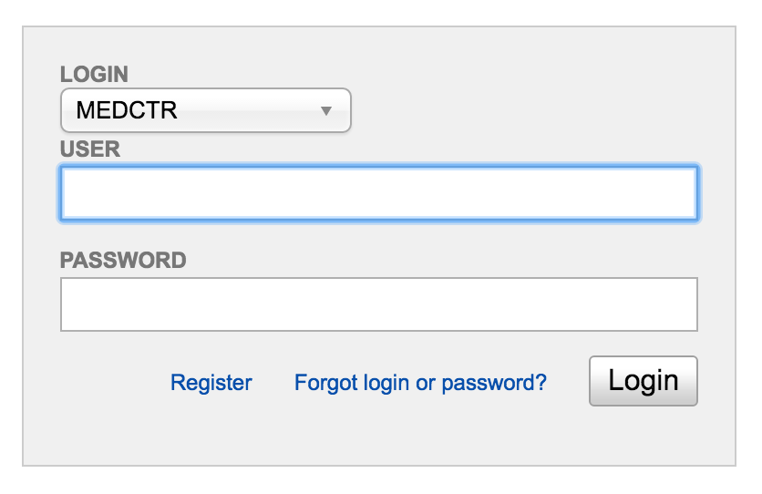
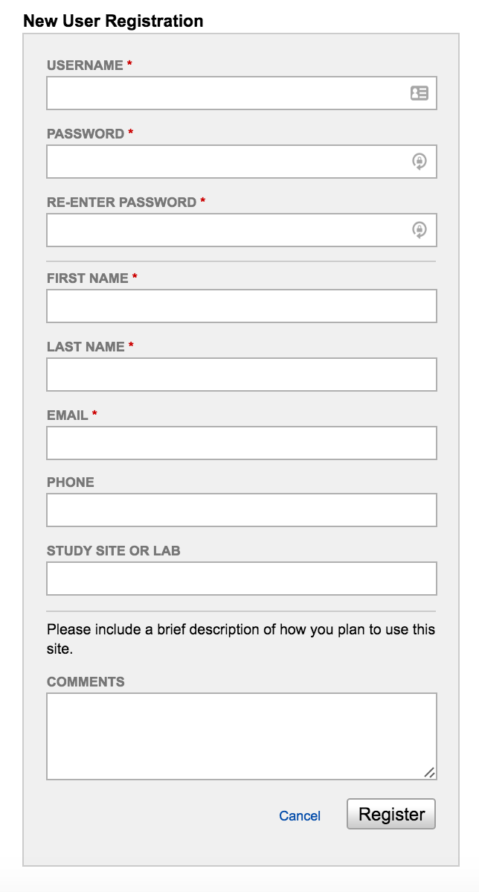
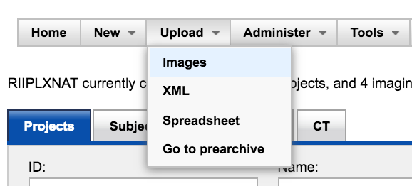
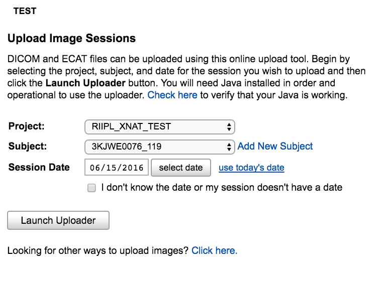
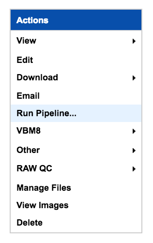
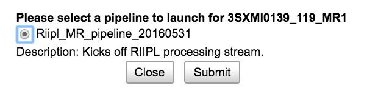
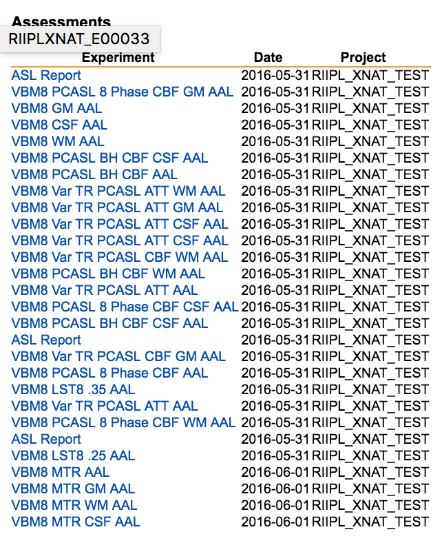

Using RIIPL XNAT¶
The RIIPL laboratory uses XNAT to upload, receive, and manage images.
What is XNAT?¶
XNAT is an open-source imaging informatics software platform. Most of your interactions with the RIIPL system will occur through our XNAT installation.
For Users¶
Register a User¶
Step 1: Select “Register” at the Login Page.
Step 2: Complete the User Request Form.
Upload Images¶
 - ..TIP::
- You can send directly from the Scanner DICOM Receiver information Server Name is: riiplxnat.medeng.wfubmc.edu AE TITLE is: RIIPLXNAT Port is: 8104
Starting the processing pipeline¶
While viewing a Subject’s Scan..
Step 1: Select “Run Pipeline..”
Step 2: Select from available pipelines.
Step 3: Select Pipeline processing options.
Downloading Dicom Images¶
While viewing a Subject’s Scan..
Step 1: Select the option to “Download Images”
Step 2: Select which images to download
Accessing Processed Image Data¶
While viewing a Subject’s Scan..
Select from “Assessments” at the bottom of the page.
For Primary Investigators¶
RIIPL is currently focused on processing fMRI data. If you are interested in setting up a consultation to see if RIIPL is appropriate for your research, please contact Richard Barcus.